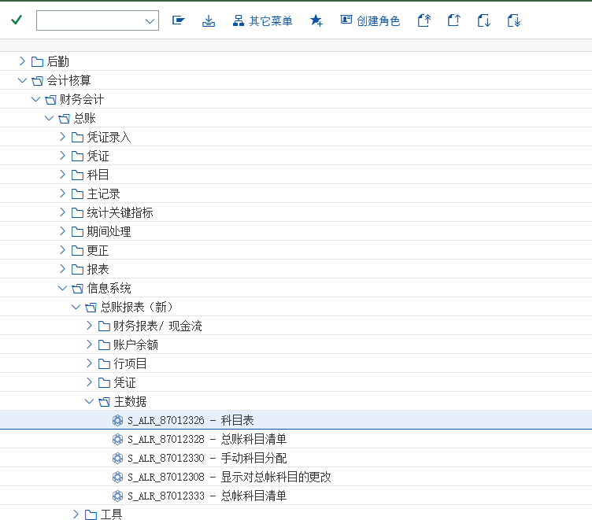

术语与 T-code 速查
中英对照 · 事务码 · 常用表 · 教材任务总索引
术语中英对照（教学用中文说法 + SAP 原生名称）、事务码速查、常用表、教材 45 个任务总索引 —— 上课随时回来查。
术语中英对照（56 条）
| 中文 | English / SAP 名称 | 说明 |
|---|---|---|
| 财务会计 | FI · Financial Accounting | 对外财务报告：总账、应收、应付、资产、报表 |
| 管理会计 | CO · Controlling | 对内成本与考核；与 FI 共用一套总账科目，实时过账 |
| 公司代码 | Company Code | 对外出报表的最小法人单位（教材 C999 颐宁机械有限公司） |
| 会计科目表 | Chart of Accounts | 科目体系与科目号长度（教材 A999，8 位） |
| 会计年度变式 | Fiscal Year Variant | 定义过账期间与特殊期间数（教材 ZF） |
| 信贷控制范围 | Credit Control Area | 信用控制的边界，与公司代码多对一（教材 C999） |
| 记账期间变式 | Posting Period Variant | 控制哪些期间可过账（教材 P999） |
| 未清过帐期间和已结过帐期间 | Open and Closed Posting Periods | 前台的期间开关（S_ALR_87003642，任务 18） |
| 字段状态变式 | Field Status Variant | 公司代码的参数，含多个字段状态组（教材 Z001） |
| 字段状态组 | Field Status Group | 会计科目的参数，控制凭证中辅助核算项的必输/可选/隐藏（教材 ZEXP/ZGBS/ZMMA/ZRAA/ZREV） |
| 科目组 | Account Group | 控制科目本身的字段状态与编号范围（教材 RAA/BSA/PLA） |
| 总账科目 | G/L Account | 分科目表层（SKA1）与公司代码层（SKB1）维护；FS00 |
| 科目表层 | Chart of Accounts Level | 跨公司代码的科目数据（表 SKA1） |
| 公司代码层 | Company Code Level | 字段状态组、统驭科目、只能自动记帐等（表 SKB1） |
| 统驭科目 | Reconciliation Account | 客户/供应商明细汇总到总账的科目（教材 11310101 / 21210101） |
| 留存收益科目 | Retained Earnings Account | 年结时损益科目余额转入的科目（教材 410901） |
| 只能自动记帐 | Post Automatically Only | 禁止手工记账到该科目（任务 43 保护收入科目） |
| 会计凭证 | Accounting Document | 凭证抬头 BKPF + 行项目 BSEG |
| 凭证类型 | Document Type | 决定号码范围与字段状态（SA/KZ/KR/DR/DZ…）；教材付款画面是 KZ |
| 记账码 | Posting Key | 决定行项目借贷方向与字段状态（40/50 总账，001/002 客户，25 供应商） |
| 过账 | Posting | 把凭证写进账簿并更新余额；预制（暂存）不算过账 |
| 预制凭证 | Parked Document | 草稿凭证，过账后才更新余额（FBV0 过账，教材未演示） |
| 冲销 | Reversal | 已过账凭证不能删，只能冲销（FB08） |
| 客户主数据 | Customer Master | 一般 / 公司代码 / 销售数据三层；FD01 建 |
| 供应商主数据 | Vendor Master | 一般 / 公司代码 / 采购数据三层；FK01 建 |
| 业务伙伴 | Business Partner | 客户与供应商的统称，MM/SD/FI 共用同一份主数据 |
| 账户组 | Account Group | 决定业务伙伴的字段屏幕格式与编号范围（教材 K001/K002、G001–G003） |
| 编号范围 | Number Range | 账户组可用的号码区间（客户 Z1 10000000–19999999 等） |
| 排序码 | Sort Key | 决定行项目「分配」字段带出什么内容（教材任务 29 用 001） |
| 未清项 | Open Item | 尚未被收付款清掉的发票（客户 BSID / 供应商 BSIK） |
| 已清项 | Cleared Item | 已被清账的行项目（客户 BSAD / 供应商 BSAK） |
| 清账 | Clearing | 把收款/付款与未清发票配对，未清项变已清项 |
| 部分清账 | Partial Clearing | 只清一部分，剩余金额继续挂账（教材任务 34 的剩余项目） |
| 自动清账 | Automatic Clearing | 按规则批量清账；F.13（教材未演示） |
| 自动付款 | Automatic Payment | 付款提议与过账程序；F110（教材未演示） |
| 客户发票 | Customer Invoice | FB70 录入；借客户 / 贷收入 + 销项税 |
| 供应商发票 | Vendor Invoice | FB60 录入；借费用/存货 + 进项税 / 贷供应商 |
| 收款 | Incoming Payment | F-28：借银行存款 / 贷客户 |
| 付款 | Outgoing Payment | F-53：借供应商 / 贷银行存款（教材画面凭证类型 KZ） |
| 容差组 | Tolerance Group | 允许的差异范围：雇员容差组（任务 19）与应收应付容差组（任务 22） |
| 进项税 | Input Tax | 采购发票可抵扣税额（教材 21710101） |
| 销项税 | Output Tax | 销售发票应纳税额（教材 21710102，税码 MWS） |
| 自动税务过账 | Automatic Tax Posting | 税码到税务科目的映射（任务 21 后半段） |
| 科目余额 | Account Balance | 凭证过账累积的结果；FS10N / FAGLB03（新，教材未演示） |
| 客户余额 | Customer Balance | FD10N；教材客户 10000000 期间 3 余额 58.000,00 |
| 供应商余额 | Vendor Balance | FK10N；教材行项目显示应付 21210101 与清帐日期 |
| 科目余额表 | G/L Account Balances Report | S_ALR_87012276（任务 42） |
| 客户余额报表 | Customer Balances Report | s_alr_87012172（任务 35） |
| 供应商余额报表 | Vendor Balances Report | s_alr_87012082（任务 40） |
| 财务报表版本 | Financial Statement Version | 把科目范围映射成报表项目的配置（任务 44） |
| 资产负债表 | Balance Sheet | 教材任务 45 运行结果：资产 223.680 / 权益 223.680 |
| 损益表 | Profit & Loss Statement | P&L 结果 / 净值结果（利润·亏损）由系统自动轧差 |
| 本年净增未分配利润 | Net Increase of Retained Earnings | 债券式报表项目 3142，教材任务 44 用到 |
| 凭证号码范围 | Document Number Range | 凭证号的区间；任务 15 从 0001 复制到 C999 |
| 科目汇总 | Account List / Overview | S_alr_87012326（任务 14），清点科目用 |
| GR/IR | Goods Receipt / Invoice Receipt | 材料采购中间科目 12010101，收货与发票之间的桥 |
事务码速查
教材出现的事务码（10 个）
| T-code | 教材任务 | 索引 |
|---|---|---|
| FB03 | 输入总帐科目凭证 | 任务 20 |
| FB50 | 输入总帐科目凭证 | 任务 20 |
| FB60 | 收到供应商发票 | 任务 37 |
| FB70 | 输入客户发票 | 任务 32 |
| FB70 | 收到客户部分还款 | 任务 34 |
| FD01 | 新建订货方主数据 | 任务 29 |
| FD01 | 新建收货方主数据 | 任务 30 |
| FD10N | 显示客户余额 | 任务 36 |
| FK01 | 新建供应商主数据 | 任务 31 |
| FK10N | 显示供应商余额 | 任务 41 |
| FS00 | 新建一般资产负债科目 | 任务 10 |
| FS00 | 新建统驭科目－应收/应付 | 任务 11 |
| FS00 | 新建材料采购科目 | 任务 12 |
| FS00 | 新建损益科目 | 任务 13 |
| FS00 | 将收入科目设置为只能自动记帐 | 任务 43 |
| FS10N | 显示总帐科目余额 | 任务 21 |
教材里的报表事务码FI 有几支是报表事务码而不是录入事务码：
S_alr_87012326（任务 14 科目汇总）、S_ALR_87003642（任务 18 期间开关）、s_alr_87012172 / s_alr_87012082（任务 35/40 客户与供应商余额报表）、S_ALR_87012276（任务 42 科目余额表）。大小写在系统里不敏感，但背不出来时用菜单路径找更稳妥。本模块常用事务码（含教材未演示的）
| T-code | 用途 |
|---|---|
FS00/FS01/FS02/FS03 | 总账科目：创建/修改/显示/显示公司代码视图（教材用 FS00） |
FSP0/FSS0 | 科目表层 / 公司代码层单独维护（教材未演示，项目常用） |
FS10N | 显示总账科目余额（教材任务 21） |
FAGLB03/FAGLL03 | 显示余额 / 行项目（新总账版，教材未演示） |
FBL3N/FBL5N/FBL1N | 总账 / 客户 / 供应商行项目（查凭证流最常用，教材未演示） |
FB50/FB01/FB03/FB08 | 总账凭证：录入（教材 20）/ 经典录入 / 显示 / 冲销 |
FBV0 | 过账预制凭证（教材未演示） |
FB70/FB75 | 客户发票 / 客户贷项凭证（教材任务 32） |
F-22/F-27 | 输入发票（常规）/ 贷项凭证（常规）（教材未演示） |
F-28 | 收款（教材任务 33/34） |
F-32 | 客户清账（教材未演示） |
FB60/FB65 | 供应商发票 / 供应商贷项凭证（教材任务 37） |
F-43/F-44 | 输入发票（常规）/ 贷项凭证（常规）（教材未演示） |
F-53 | 付款过账（教材任务 39） |
F110 | 自动付款程序（教材未演示，月末必用） |
F.13 | 自动清账（教材未演示） |
FD01/FD02/FD03 | 客户主数据：创建（教材任务 29/30）/ 修改 / 显示 |
FD10N | 显示客户余额（教材任务 36） |
FK01/FK02/FK03 | 供应商主数据：创建（教材任务 31）/ 修改 / 显示 |
FK10N | 显示供应商余额（教材任务 41） |
S_alr_87012326 | 科目汇总/科目清单（教材任务 14） |
S_ALR_87003642 | 未清过帐期间和已结过帐期间（教材任务 18） |
S_ALR_87012276 | 总账科目余额表（教材任务 42） |
s_alr_87012172 / s_alr_87012082 | 客户余额报表 / 供应商余额报表（教材任务 35/40） |
OB13/OBD4/OBC4 | 会计科目表 / 账户组 / 字段状态变式（后台，教材走 IMG 菜单） |
OB52/OBB0 | 记账期间变式与开关期间（后台，教材任务 16–18 走 IMG 与前台的 S_ALR_87003642） |
OBY6/OB29/OB53 | 公司代码全局参数 / 会计年度变式 / 留存收益科目（后台） |
OBYC | MM-FI 自动记账科目确定（BSX/WRX/GBB）—— 见 MM 站 |
XD01/BD01 | 业务伙伴/客户供应商集中维护（教材未演示；新版本会引导到 BP） |
常用表（查问题用）
| 表 | 内容 |
|---|---|
BKPF / BSEG | 会计凭证抬头 / 行项目（所有分录都在这里） |
SKA1 / SKB1 / SKAT | 总账科目：科目表层 / 公司代码层 / 科目描述 |
KNA1 / KNB1 / KNVV | 客户：一般数据 / 公司代码数据 / 销售数据 |
LFA1 / LFB1 / LFM1 | 供应商：一般数据 / 公司代码数据 / 采购数据 |
BSID / BSAD | 客户未清项 / 已清项 |
BSIK / BSAK | 供应商未清项 / 已清项 |
BSIS / BSAS | 总账未清项 / 已清项（清账管理的科目） |
FAGLFLEXT | 总账汇总表（新总账，余额取数表） |
T001 / T001B | 公司代码 / 公司代码的开账关账期间 |
T004 / T004F | 会计科目表 / 字段状态的定义（表名随版本略有差异，用 F1 确认） |
T077Z / T077D | 客户/供应商账户组与编号范围（账户组配置） |
在自系统里怎么确认表名用
SE16N/SE11 查表（教材未演示）；或在画面上把光标放到字段上按 F1 → 「技术信息」，就能看到字段与表名。本页的表名按标准结构写，版本差异请以自己系统为准。教材任务总索引（45 个）
| 任务 | 标题 | IMG 路径 / 前台路径 | 截图 |
|---|---|---|---|
| 01 | 创建公司代码 | 企业结构 → 定义 → 财务会计 → 编辑/复制/删除/检查公司代码、编辑公司代码数据选择编辑公司代码数据 | 2 |
| 02 | 创建会计科目表 | 财务会计新 → 总帐会计新 → 总帐科目 → 主数据 → 总账科目-准备 → 编辑科目表清单按下图进行创建，创建完毕后点击保存按钮 | 2 |
| 03 | 定义会计年度变式 | 财务会计 → 财务会计的全局设置 → 会计年度 → 分类账 → 会计年度和过账期间 → 维护会计年度变式（维护缩短的会计年度）点击新建按钮新条目 | 2 |
| 04 | 创建信贷控制范围 | 企业结构 → 定义 → 财务会计 → 定义信贷控制范围创建如下信息： | 2 |
| 05 | 维护公司代码的全局参数 | 财务会计 → 财务会计的全局设置 → 公司代码 → 输入全局参数 | 2 |
| 06 | 定义科目组及输入控制 | 财务会计 → 总帐会计 → 总帐科目 → 主数据 → 准备 → 定义科目组 | 9 |
| 07 | 定义字段状态变式 | 财务会计(新) → 财务会计全局设置(新) → 字段 → 定义字段状态变式 | 10 |
| 08 | 向字段状态变式分配公司代码 | 财务会计 → 财务会计全局设置 → 凭证 → 行项目 → 控制 → 向字段状态变式分配公司代码 | 2 |
| 09 | 定义存留收益科目 | 财务会计(新) → 总帐会计(新) → 主数据 → 总帐科目 → 准备 → 定义留存收益科目 | 2 |
| 10 | 新建一般资产负债科目 | 21710102 未交税金 → 增值税 → 销项税额 | 2 |
| 11 | 新建统驭科目－应收/应付 | — | 3 |
| 12 | 新建材料采购科目 | — | 1 |
| 13 | 新建损益科目 | — | 36 |
| 14 | 显示科目汇总 | — | 1 |
| 15 | 复制凭证号码范围到公司代码 | 财务会计(新) → 财务会计全局设置(新) → 凭证 → 凭证号范围 → 复制到公司代码 | 4 |
| 16 | 定义记帐期间变式 | 财务会计(新) → 财务会计全局设置(新) → 分类账 → 会计年度和过账期间 → 过账期间-定义未清过账期间变式 | 1 |
| 17 | 将记帐期间变式分配给公司代码 | 财务会计(新) → 财务会计全局设置(新) → 分类账 → 会计年度和过账期间 → 过账期间-将变式分配给公司代码 | 1 |
| 18 | 设置记帐期间(前台) | 会计核算 → 财务会计 → 总帐 → 环境 → 当前设置 → 未清过帐期间和已结过帐期间 | 2 |
| 19 | 定义过帐容差组 | 财务会计(新) → 财务会计的全局设置(新) → 凭证 → 容差组 → 定义雇员的容差组 | 2 |
| 20 | 输入总帐科目凭证 | — | 4 |
| 21 | 显示总帐科目余额 | 后台 财务会计(新) → 财务会计的全局设置(新) → 销售/购置税 → 过帐 → 定义税务科目 | 7 |
| 22 | 定义应收应付容差组 | 财务会计(新) → 应收账目和应付账目 → 业务交易 → 对外支付 → 付款 → 手工对外支付 → 定义容差组 | 2 |
| 23 | 定义供应商账号组 | 财务会计 → 应收账目和应付账目 → 供应商账号 → 主数据 → 供应商主数据创建准备 → 定义带有屏幕格式的账户组（供应商） | 8 |
| 24 | 定义供应商账户编号范围 | 财务会计 → 应收账目和应付账目 → 供应商账户 → 主数据 → 供应商主记录创建准备 → 创建供应商账户编号范围 | 5 |
| 25 | 分配供应商编号范围 | 财务会计 → 应收账目和应付账目 → 供应商账户 → 主数据 → 供应商主记录创建准备 → 供应商账户组分配编号范围 | 1 |
| 26 | 定义客户账户组 | 财务会计(新) → 应收账款和应付账款 → 客户账户 → 主数据 → 创建客户主记录准备 → 定义带有格式的账户组（客户） | 8 |
| 27 | 定义客户账户编号 | 财务会计(新) → 应收账款和应付账款 → 客户账户 → 主数据 → 创建客户主记录准备 → 创建客户账户编号范围 | 4 |
| 28 | 分配客户编号范围 | 财务会计(新) → 应收账款和应付账款 → 客户账户 → 主数据 → 创建客户主记录准备 → 分配客户账户编号范围 | 1 |
| 29 | 新建订货方主数据 | — | 4 |
| 30 | 新建收货方主数据 | — | 0 |
| 31 | 新建供应商主数据 | 会计核算 → 财务会计 → 供应商 → 主记录 | 1 |
| 32 | 输入客户发票 | — | 2 |
| 33 | 收到客户全额还款 | 会计 → 财务会计 → 应收帐款 → 凭证输入 → F-28 收款 | 4 |
| 34 | 收到客户部分还款 | — | 4 |
| 35 | 显示应收帐款余额 | 会计 → 财务会计 → 应收帐款 → 信息系统 → 应收帐款会计核算报表 → 客户余额 → s_alr_87012172 | 1 |
| 36 | 显示客户余额 | 会计 → 财务会计 → 应收帐款 → 账户 → FD10N | 2 |
| 37 | 收到供应商发票 | 会计 → 财务会计 → 应付帐款 → 凭证输入 → FB60 发票 | 1 |
| 38 | 模拟 | — | 1 |
| 39 | 向供应商付款 | 会计 → 财务会计 → 应付帐款 → 凭证输入 → 付款 → F-53 过帐 | 2 |
| 40 | 显示应付帐款余额 | 会计 → 财务会计 → 应付帐款 → 信息系统 → 应付科目会计核算报表 → s_alr_87012082 | 1 |
| 41 | 显示供应商余额 | 会计 → 财务会计 → 应付帐款 → 账户 → FK10N → 显示余额 | 2 |
| 42 | 总帐科目余额汇总表 | 会计 → 财务会计 → 总帐 → 信息系统 → 总帐报表(新) → 科目余额 → 常规 → 总帐科目余额 | 2 |
| 43 | 将收入科目设置为只能自动记帐 | — | 2 |
| 44 | 定义资产负债表和损益表结构 | 财务会计 → 总帐会计 → 业务往来 → 结算 → 编制凭证 → 定义会计报表版本 | 23 |
| 45 | 运行资产负债表 | 会计 → 财务会计 → 总分类帐 → 信息系统 → 总帐报表 → 资产负债表/损益表/现金流 → 常规 → 计划/实际比较 → 年度计划/实际比较 | 3 |
术语的画面示例（两张）

{kind=link}
